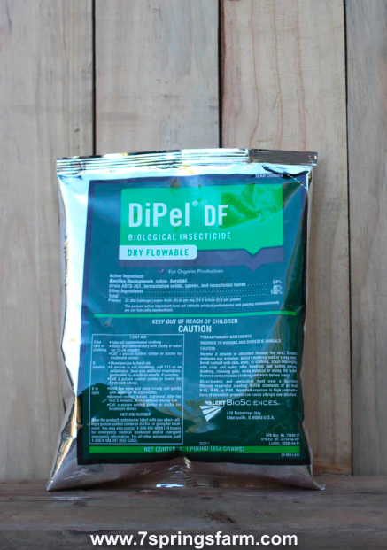
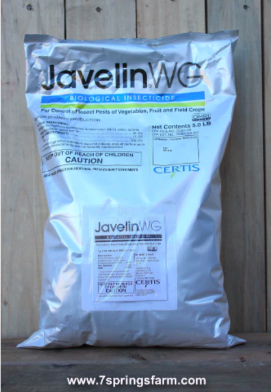
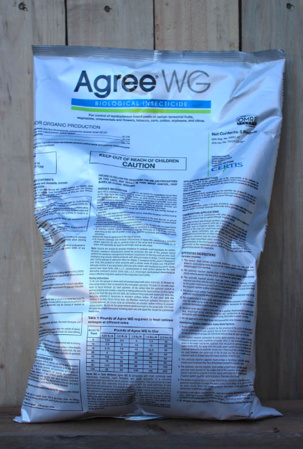

| BT-A（Agree WG）、 BT-K (Javelin WG、Dipel DF） |
| 产品图片 |

|

|

|
| 基本介绍 |
-
BT-A和BT-K
主要成分都是苏云芽孢杆菌亚种，只不过BT-A的的菌株类型是aizawai
strain，BT-K的菌种类型是kurstaki strain.
-
BT-K( Javelin WG 和Dipel DF )主要成分一样，区别是Javelin WG
含有kurstaki菌株比例较大，占85%，Dipel DF只有56%。
- 三者都是用于控制鳞翅目幼虫的生物杀虫剂
-
药品通过攻击幼虫肠道杀死害虫，所以必须被昆虫摄入才能有效。
-
在发现虫害的初期使用，根据虫害的规模来确定最佳打药的时期，主要针对虫卵和幼虫；
|
| 下菜时间： |
喷洒当天即可下菜。 |
| 配药方法 |
-
配药——先把打药设备中加入3/4的水，边搅拌边加入药品，再倒入剩余的水，继续搅拌，混合均匀。
-
喷洒卷心菜等难以湿润的作物时，可以混合展着剂使用（我们可以用效自油）。
- 不要让稀释的喷雾剂在水箱中 停留超过 48 小时。
-
应避免在 24 至 48 小时内灌溉打过药的区域，以防止药品被水冲掉。
|
| 使用最佳时间 |
在幼虫(早龄)时进行处理，越早发现，治疗效果越好
|
| 药物起作用时间： |
-
摄入致死剂量的BT-A和BT-K后，幼虫一小时内停止摄⻝，数小时至三
天内死亡。死亡率随幼虫大小(龄)、鳞翅目种类和消耗的剂量而变化。
-
摄入后，幼虫变得迟钝、变色，然后枯萎、变黑并死
亡。较小的幼虫死得更快。
|
| 用药间隔： |
- BT-A（Agree-WG）：3-7天
- BT-K（Javelin WG）：10天
-
BT-K（Dipel
DF）：3-14天，具体取决于植物生⻓速率、虫子的活动、处理后的降雨量和其他因素。如果试图用单次喷雾来控制害虫，请在卵孵化基本完成但作物损害发生之前进行处理。
|
| 存储、处理空袋子 |
将袋子完全清空到打药设备里。然后将空袋放入卫生填埋场或焚烧处理。
|
|
BT-A（Agree WG）和BT-K（Javalin WG） 针对害虫及用药比例
|
|
（⚠️没有例举所有的害虫，仅是最常见的害虫）： 欧洲玉米螟(European
Corn Bore)、盐沼毛毛虫(Saltmarsh Caterpillar)等
|
| 蔬菜作物： |
芦笋，豆类，西兰花，甘蓝、卷心菜、刺心菜、胡萝卜、花椰菜、芹菜、鹰嘴豆、大白菜、羽衣甘蓝、黄
瓜、干球洋葱、茄子、大蒜、大葱、辣根、酸菜、韭菜、生菜、甜瓜、西瓜、秋葵、洋葱、欧芹、欧洲防风草、
豌豆、辣椒、土豆、南瓜、萝卜、大头菜、婆罗门
参，菠菜，南瓜(夏季和冬季)，甜玉米，红薯，甜菜，西红柿，萝卜根
|
用药浓度：0.12-1.5磅／英亩。每英亩按50加仑水量计算，即：1g-13.6g/加仑
|
| 大田作物： |
大豆、干豆、豌豆、扁豆、花生、大米、甜菜、高粱
|
用药浓度：0.25‐1.50磅／英亩，每英亩按50加仑水量计算，即2.3g-13.6g/加仑
|
| 玉米 |
注意事项：必须在幼虫钻进茎杆之前使用。 |
兑药浓度：0.5-1.5磅／英亩
，每英亩按50加仑水量计算，即4.6g-13.6g／加仑
|
| 小谷物 |
每英亩按50加仑水量计算，即 9g-13.6g/加仑 |
用药浓度：1-1.5磅／英亩 |
| 用药说明： |
- 可据害虫情况重复喷洒
-
用药浓度有一个范围，当与其他接触性杀虫剂混合使用时，或在轻度害虫侵扰的条件下或当存在均匀的小蠕虫时，用低浓度；当存在多个蠕虫生命阶段、持续的卵孵化或存在幼小或轻度粘虫感染时，用中等浓度；对于重度蠕虫感染、成熟(较大)蠕虫或粘虫、棉铃虫
或其他难以控制的蠕虫物种的中度至重度感染，用高浓度。
-
如植物枝叶茂盛或快速生长，可增大用水量使药物充分覆盖植物表面。
|
|
BT-K（Dipel
DF）针对害虫及用药比例：（⚠️没有例举所有的害虫，仅是最常见的害虫）
|
| 蔬菜作物 |
绿叶菜和十字花科蔬菜： |
如 生菜、羽衣甘蓝、芹菜、 菠菜、西兰花、 卷心菜、芥
末，花椰菜、白菜、菊苣、 大头菜、香菜。
|
| 豆类蔬菜： |
如豆类、豌豆、扁豆和大豆 |
| 根茎类蔬菜： |
如胡萝卜、⻢铃薯、甜菜头 |
| 球茎类蔬菜： |
如 韭菜、大蒜和 洋葱 |
| 葫芦科蔬菜： |
如 甜瓜， ⻩瓜 和壁球 |
| 其他果菜： |
如番茄，辣椒和 茄子 |
| 用药浓度： |
菜蛾、地老虎、弯钩菜青虫（looper）、盐沼毛毛虫：½-1磅／英亩。
即4.5g-9g/加仑
|
| 粘虫：1-2磅／英亩，即9-18g/加仑 |
| 大田作物 |
小谷物、玉米 |
-
用药浓度：
- 弯钩菜青虫：½-1磅／英亩， 即4.5g-9g/加仑
- 穗虫（headworm）： ½-1磅／英亩， 即4.5g-9g/加仑
- 欧洲玉米螟 1.4-2磅／英亩，即13-18g/加仑
- 粘虫：1-2磅／英亩，即9-18g/加仑
|
|
⚠️用药说明：在害虫种群压力大的情况下使用较高的浓度、缩短喷洒间隔和/或增加喷洒量以提高喷洒覆盖率.
|